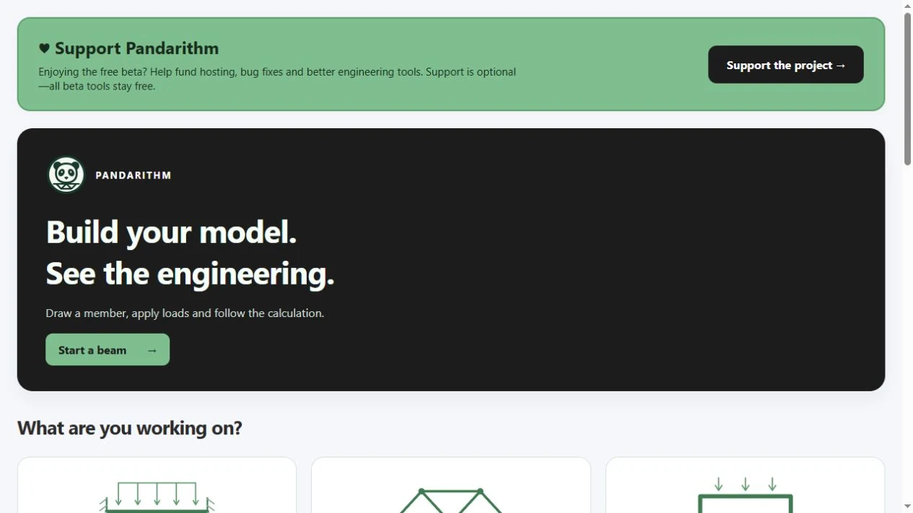
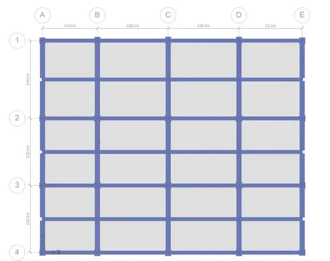
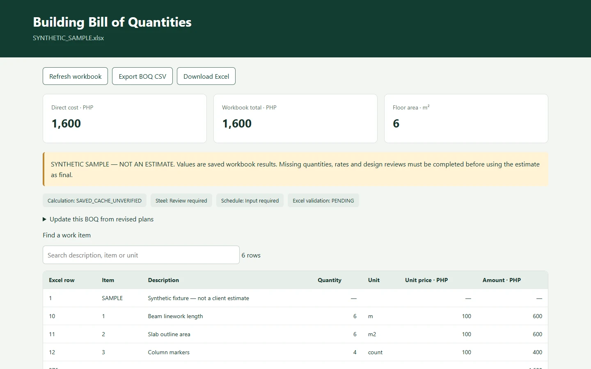
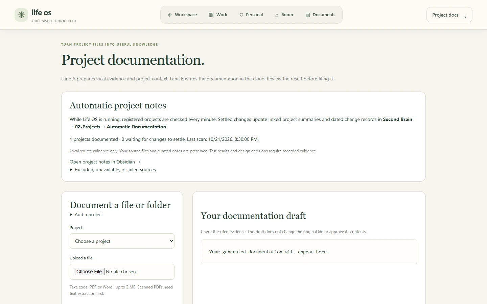
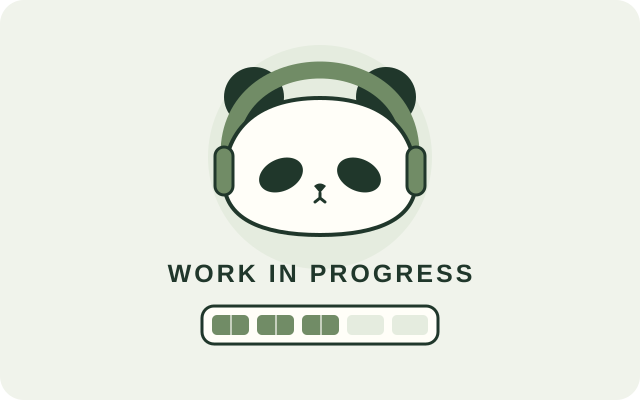

Systematic testing
Expand test coverage and validate individual modules before treating them as dependable design tools.
Registered Civil Engineer
RUZZEL A. DULAY, RCE
Civil Engineer | Structural Design · Cost Engineering · Automation
Registered Civil Engineer with experience in structural modeling and analysis, construction cost management and estimation. I also develop engineering software and automation workflows, with verification and review appropriate to each project.
Structures · Cost · Automation
Civil engineering / Structures / Cost / Automation
For recruiters / Role-specific resumes
Start with my General Civil Engineer resume, or choose a version focused on the position you are recruiting for.
A broad overview of structural modeling, estimation, cost control and engineering automation.
General Civil Engineer · PDF · 2 pages
Featured build / Independent engineering software
Public betaEngineering Analysis & Design Platform
Engineering theory, translated into computational tools. A web-based platform I’m developing to make structural analysis and design calculations more accessible, organized and repeatable.
Beam and truss analysis, reinforced concrete and steel design, with individual features at different stages of development and validation.
Define geometry, supports and loads. My distributed-load work develops a generalized calculation approach from structural equations, with manual checks and benchmark comparisons guiding refinement.
I develop the engineering approaches, mathematical formulations, pseudocode and algorithm flowcharts. AI-assisted coding supports implementation, debugging and refinement; independent solutions and reference benchmarks are used to check the calculations.
Identify equations, assumptions, boundary conditions, inputs and expected outputs.
Derive or adapt expressions, then establish the pseudocode and calculation sequence.
Translate the approach into software, using AI-assisted coding where useful.
Solve representative problems independently and compare with the software.
Compare against established reference solutions and investigate discrepancies.
Correct calculation, numerical precision and decimal-related errors.
Verification is ongoing. Pandarithm is not presented as fully validated or certified structural design software.
The platform remains under active development and verification. My next priorities focus on making calculations easier to inspect, compare and review.
Expand test coverage and validate individual modules before treating them as dependable design tools.
Make the calculation procedure and its engineering basis more understandable.
Refine reports into clearer records that support practical engineering workflows.
The long-term objective: reliable calculations, understandable procedures and practical workflows for civil and structural engineering.
Project Creator · Engineering Logic Developer · Validation LeadIndependent engineering software development · Under active development and verification
Engineering / Software / Structural work
Engineering platforms, practical automation and structural work. Explore the tools, models and evidence behind each project.
01 / 07

Structural Engineering Analysis & Design Platform
A web platform translating structural engineering theory into repeatable analysis and design workflows.
Public beta · verification ongoing
Launch Pandarithm Beta
2025 · Structural Design · Alliance Textile Mills Inc.
ETABS modeling and AutoCAD documentation for a reinforced-concrete building.
Selected earlier work
2026 · Current project
An active coordination workflow bringing drawing sets, structural models, estimates and construction schedules into one reviewable project package.
Active project · review in progress

Automated Quantity Takeoff & Cost Estimation
Reviewed DXF mappings connect drawing quantities to Excel BOQ workflows, with explicit units and traceable extraction evidence.
In development · verification ongoing

2025 · Structural Design · Alliance Textile Mills Inc.
Structural modeling and analysis of an industrial steel warehouse with gravity and lateral load cases.
Selected earlier work

2025 · Structural Design · Alliance Textile Mills Inc.
ETABS modeling and structural drawing development for a multi-story residential building.
Selected earlier work

2024 · Academic Research · La Union, Philippines
A five-story school study comparing seismic-response strategies through time-history analysis.
Selected earlier work
A practical engineering perspective
A Registered Civil Engineer who brings structural understanding, cost awareness and a habit of improving how the work gets done.
My work began with ETABS models, AutoCAD drawings and quantity takeoffs. It developed into budget monitoring, variance analysis, EAC forecasting and cash-flow reporting at Millennium Erectors Corporation.
I go beyond completing the assigned task. I identify repetitive work and gaps in the process, then build practical improvements: Excel/VBA proposal and estimation tools, cost-reporting dashboards, browser workflows and Python utilities. I test, review and refine those tools so they support the people doing the work.
I like building tools with personality. The forest, cloud and cosmos themes stay part of this portfolio—just with more room for the work to speak.
Current focus · October 2026
Structural models, drawing development and coordinated engineering deliverables form the core of my practice.
Pandarithm, ETABS audit workflows and practical automation support calculation review and project documentation.
Quantity takeoffs, estimates, budget monitoring and reporting support informed project delivery.
Supporting capabilities / Technology & cost
I bring more than the assigned deliverable: calculation tools, workflow improvements and cost reporting built around real engineering needs.

2026 · HTML-based work automation
An evolving cost-control workspace bringing the latest HELIO dashboard, expense monitoring, PDF-to-Excel extraction and engineering workflow automation into one suite.
Local HTML tool suite
Automated Quantity Takeoff & Cost Estimation
Reviewed DXF mappings connect drawing quantities to Excel BOQ workflows, with explicit units and traceable extraction evidence.
In development · verification ongoing

Local-First Knowledge & Project Documentation System
An evolving knowledge and project workspace: Second Brain expanded into Life OS, then added project review, documentation and agent-assisted workflows.
Local development · optional cloud authoring

2025–2026 · Personal Project · MPLE Board Exam Reviewer
An updated gamified study and review tool, evolved from the earlier review engine.
Updated tool · preview in progress
How I work
I connect engineering decisions with the quantities, records and tools needed to carry them through.
Review the inputs, build the model and document the engineering scope.
Project library
Choose a discipline to see the most relevant work first. Each case study outlines the objective, my contribution, tools, deliverables and review status.
Showing 22 projects
Automated Quantity Takeoff & Cost Estimation
Reviewed DXF mappings connect drawing quantities to Excel BOQ workflows, with explicit units and traceable extraction evidence.
Role Engineering estimation and automation development.
Tools Python, ezdxf, explicit unit/entity mappings and Excel.
In development · verification ongoing

2025 · Developed in-house at IEEI · Vertical Transport · Mitsubishi Electric
Excel/VBA proposal generation that connects pricing and technical specifications in one repeatable workflow.
Role Excel/VBA proposal automation developer.
Tools Excel, VBA, synchronized input and event handling.
Selected earlier work

2025 · Developed in-house at IEEI · Estimation & Costing
An Excel/VBA tool for repeatable multi-story estimates and more consistent cost reporting.
Role Estimation workflow and VBA automation developer.
Tools Excel, VBA, variable project inputs and linked costing sheets.
Selected earlier work
2025 · Structural Design · Alliance Textile Mills Inc.
ETABS modeling and AutoCAD documentation for a reinforced-concrete building.
Role Structural modeling, analysis and documentation.
Tools ETABS, AutoCAD, RC frame modeling and load cases.
Selected earlier work
2025 · Structural Design · Alliance Textile Mills Inc.
Structural modeling and analysis of an industrial steel warehouse with gravity and lateral load cases.
Role Structural modeling and analysis.
Tools ETABS, steel framing, roof trusses, wind and seismic load cases.
Selected earlier work
2025 · Structural Design · Alliance Textile Mills Inc.
ETABS modeling and structural drawing development for a multi-story residential building.
Role Structural modeling and drawing development.
Tools ETABS, AutoCAD and reinforced-concrete framing.
Selected earlier work
2024 · Academic Research · La Union, Philippines
A five-story school study comparing seismic-response strategies through time-history analysis.
Role Thesis researcher and structural-analysis contributor.
Tools ETABS, SAP2000 and nonlinear time-history comparisons.
Selected earlier work

Academic & Professional Training
PlanSwift material takeoffs to support estimation and quantity verification.
Role Digital quantity takeoff and measurement.
Tools PlanSwift, drawing interpretation and quantity checks.
Selected earlier work

2026 · Personal / Reference Build · Structural BOQ Estimation
Schema-based BOQ workbooks and estimation workflows for repeatable civil project planning.
Role Workbook audit and estimation workflow development.
Tools Excel, workbook schemas and quantity/cost consistency review.
Selected earlier work
2025–2026 · Personal Project · MPLE Board Exam Reviewer
An updated gamified study and review tool, evolved from the earlier review engine.
Role Independent review-tool developer.
Tools Python and HTML/JavaScript, as documented for the earlier implementation.
Updated tool · preview in progress
Structural Engineering Analysis & Design Platform
A web platform translating structural engineering theory into repeatable analysis and design workflows.
Role Project Creator, Engineering Logic Developer and Validation Lead.
Tools Python, Flask, NumPy, structural formulations and browser diagrams.
Public beta · verification ongoing
Launch Pandarithm Beta2026 · Current project
An active coordination workflow bringing drawing sets, structural models, estimates and construction schedules into one reviewable project package.
Role Drafting and coordination work; project-specific details withheld.
Tools Confidential project methods and files are withheld.
Active project · review in progress
2026 · Current project
An audit-first ETABS workflow for model inventories, explicit group-based loads and deterministic load combinations.
Role Local engineering automation workflow development.
Tools ETABS-oriented audit logic and local automation scaffold.
Local automation scaffold
Engineering automation · Private project
Confidential engineering automation project. Implementation details, inputs and reports are withheld.
Role Role details are withheld for confidentiality.
Tools Implementation details are withheld.
Confidential
Local-First Knowledge & Project Documentation System
An evolving knowledge and project workspace: Second Brain expanded into Life OS, then added project review, documentation and agent-assisted workflows.
Role Creator of local knowledge and project-documentation workflows.
Tools Flask, SQLite, Markdown and Obsidian-compatible links.
Local development · optional cloud authoring
2026 · HTML-based work automation
An evolving cost-control workspace bringing the latest HELIO dashboard, expense monitoring, PDF-to-Excel extraction and engineering workflow automation into one suite.
Role Cost-control workflow and automation development.
Tools HTML/JavaScript, Excel workflows, reporting and reconciliation.
Local HTML tool suite
No matching projects. Try another term or category.
Professional background
2026 Q2 – Present
Millennium Erectors Corporation
Budget monitoring, variance analysis, EAC forecasts and cash-flow reporting across active construction projects. Developing Excel/VBA dashboards to make reporting clearer and more repeatable.
2025 Q2 – 2026 Q2
IEEI
Estimated projects ranging from ₱5M to ₱700M. Built two internal tools for elevator proposals and multi-story costing, bringing linked specifications, pricing and reports into repeatable workflows.
2025 Q1
Developed ETABS models, AutoCAD drawings, quantity takeoffs and schedules for residential, industrial and existing-structure projects.
2024 Q1 and Q2
On-site Construction Experience
Gained practical site experience in construction sequencing, coordination and constructability, informing later modeling and design work.
Education & credentials
Technological Institute of the Philippines – Manila
2020 – 2024University of Makati
2018 – 2020Professional Regulation Commission, Philippines
Licensed November 2024 · RCEBasic level · MEP and Architecture & Structure quantity takeoff
Verify TME Verify TASContinuous development
Ongoing learning branches that support the next chapter of my engineering work.
Introduction to Computer Science
Harvard University · edXPython development coursework
Boot.devDigital quantity takeoffs
School-based training · 2023Licensure exam preparation
Licensure exam preparation
Construction Occupational Safety and Health training
BS Civil Engineering · ABET-accredited program
Behind the engineering
I build because I want things to work better—and because I enjoy finding out how they work. Engineering projects, local knowledge systems and small experiments all feed that curiosity.
Same curious companion. Less screen chaos.
FAQ / Contact
Quick answers
Civil engineering work that benefits from structural understanding, cost awareness and practical automation. My portfolio brings those three strengths together.
Taking ownership of the task, spotting repetitive work and improving the process around it. My proposal tools, reporting workflows and engineering utilities show how that becomes practical work.
Yes. Each case study describes the scope, my contribution and the available images. Project briefs are downloadable from the case-study window.
Email or LinkedIn. Share the engineering role or project context and the kind of contribution you need.
Let’s connect
Structural experience, cost awareness and practical automation—applied to the engineering and the way the work gets done.